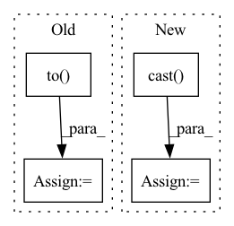

Pattern ID :2778

Before Change
metrics = {"test_correct": 0, "test_loss": 0, "test_total": 0}
criterion = nn.CrossEntropyLoss().to(device)
with torch.no_grad():
for batch_idx, (x, target) in enumerate(test_data):
x = x.to(device)
After Change
loss = y_pred[0]
accuracy = y_pred[1]
correct = tf.equal(tf.argmax(y, 1), tf.cast(target, tf.int64))
// metrics["test_correct"] += tf.reduce_mean(tf.cast(correct, tf.float32))
metrics["test_loss"] += loss * target.size(0)
In pattern: SUPERPATTERN
Frequency: 3
Non-data size: 4
Instances
Fragment ID: 11125235
Project Name: fedml-ai/fedml
Commit Name: 51350e5aa8f340f92f5a5ff1f2f88cd9ab1fe47f
Time: 2022-08-14
Author: alexliang.kh@gmail.com
File Name: python/examples/cross_silo/tf-mqtt_s3_fedavg_mnist_lr_example/tf_model_trainer_classification.py
M Class Name: TfModelTrainerCLS
N Class Name: TfModelTrainerCLS
M Method Name: test(4)
N Method Name: test(4)
M Parent Class: ClientTrainer
N Parent Class: ClientTrainer
M File Name: python/examples/cross_silo/tf-mqtt_s3_fedavg_mnist_lr_example/tf_model_trainer_classification.py
N File Name: python/examples/cross_silo/tf-mqtt_s3_fedavg_mnist_lr_example/tf_model_trainer_classification.py
M Start Line: 68
M End Line: 90
N Start Line: 51
N End Line: 65
'>
Before Change
centers = torch.floor(numpoints * L / 2).to(dtype=int_type)
// offset from k-space to first coef loc
kofflist = 1 + \
torch.floor(tm - numpoints.unsqueeze(1) / 2.0).to(dtype=torch.long)
// initialize output array
griddat = torch.zeros(size=(kdat.shape[0], 2, torch.prod(dims)),
dtype=dtype, device=device)
After Change
centers = tf.cast(tf.floor(numpoints * L / 2), int_type)
// offset from k-space to first coef loc
kofflist = 1 + \
tf.cast(tf.floor(tm - numpoints[:, None] / 2.0), int_type)
// initialize output array
griddat = tf.zeros(
shape=(kdat.shape[0], 2, tf.reduce_prod(dims)),
'>
Fragment ID: 11125234
Project Name: zaccharieramzi/tfkbnufft
Commit Name: e1123a8893ee7aeee9593a67d2151f8d860f384a
Time: 2020-03-01
Author: zaccharie.ramzi@gmail.com
File Name: tfkbnufft/nufft/interp_functions.py
M Class Name: AnonimousClass
N Class Name: AnonimousClass
M Method Name: run_interp_back(3)
N Method Name: run_interp_back(3)
M Parent Class:
N Parent Class:
M File Name: tfkbnufft/nufft/interp_functions.py
N File Name: tfkbnufft/nufft/interp_functions.py
M Start Line: 160
M End Line: 205
N Start Line: 161
N End Line: 190
'>
Before Change
metrics = {"test_correct": 0, "test_loss": 0, "test_total": 0}
criterion = nn.CrossEntropyLoss().to(device)
with torch.no_grad():
for batch_idx, (x, target) in enumerate(test_data):
x = x.to(device)
After Change
loss = y_pred[0]
accuracy = y_pred[1]
correct = tf.equal(tf.argmax(y, 1), tf.cast(target, tf.int64))
// metrics["test_correct"] += tf.reduce_mean(tf.cast(correct, tf.float32))
metrics["test_loss"] += loss * target.size(0)
'>
Fragment ID: 11125236
Project Name: fedml-ai/fedml
Commit Name: 9e66b6521a89e76f568a18fc69f0e6cf7c3c6166
Time: 2022-08-14
Author: alex.gpt.llm@gmail.com
File Name: python/examples/cross_silo/tf-mqtt_s3_fedavg_mnist_lr_example/tf_model_trainer_classification.py
M Class Name: TfModelTrainerCLS
N Class Name: TfModelTrainerCLS
M Method Name: test(4)
N Method Name: test(4)
M Parent Class: ClientTrainer
N Parent Class: ClientTrainer
M File Name: python/examples/cross_silo/tf-mqtt_s3_fedavg_mnist_lr_example/tf_model_trainer_classification.py
N File Name: python/examples/cross_silo/tf-mqtt_s3_fedavg_mnist_lr_example/tf_model_trainer_classification.py
M Start Line: 68
M End Line: 90
N Start Line: 51
N End Line: 65